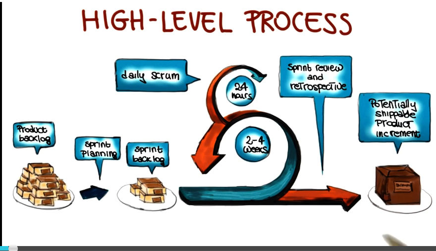

Software Dev Process Lecture Notes - Part 4 Lesson 4 - Agile Development Methods
Agile Development Method
- Equated here with TDD. Not sure those are tightly coupled, personally
Cost of Change - Enter Agile
- Cost of change grows exponentially with time
- Later changes are way more expensive
- Discover errors early… requires upfront planning
- Thus, make large upfront investments in modeling?
- This is the core value proposition of waterfall
- In the last 30 years, the equation has changed. Compiling takes seconds instead of days, testing can be re-run automatically, etc etc.
- As a result, costs of change are just lower, and doesn’t scale up with time as badly as it used to
- This is only true, obviously, if modern tools and practices are used
- If cost vs time is flat now:
- upfront work is a liability
- ambiguity, volatility -> good to delay
- Only pay in time/money for what you use. There is value in waiting
- Enter Agile!
- 17 Devs signed Agile Manifesto in 2001
- They aim at flat cost growth over time, via decreased overhead
- Focus on the code instead of planning
- Focus on people over process. Reward people.
- Emphasize iterative approaches. Deliver fast, evolve fast.
- Customer involvement
- Expectation that requirements will change.
- Focus on simplicity, both in design and code. Be as simple as possible, but no more so.
Extreme Programming (XP)
- XP is a lightweight methodology for small to medium sized teams developing softgware in the face of vague or rapidly changing requiremtns. –Kent Beck
- What is XP
- Lightweight
- Does not overburden developers with process
- Humanistic
- Centered on people. Notably developers and customers.
- Discipline
- Has tangible practices that must be followed
- Software Development
- Mentality of sufficiency
- How would you program if you had all the time in the world?
- Write tests
- Restructure often
- Talk with fellow programmers and with the customer often
- XP Value and Principles
- Communication - no good project without communication
- Pair Programming
- User Stories
- Customer Involvement
- Simplicity - use the simplest thing that works
- Feedback - get some. Use it.
- Test cases
- Estimate new user stories right away
- Courage
- Throw away what doesn’t work
- Try new things
- Fix what’s broken
- XP Practices
- Incremental Planning
- Based on the idea that requirements are written on story cards
- Select user stories for this release
- Based on time available and priority
2. Break stories into tasks
3. Plan Release
4. Develop, integrate, and test our code
- obviously an iterative step
5. Release software
6. Evaluate system and iteration
- Small Releases
- Try to release very often
- Advantages
- Deliver real business value on very short cycle
- Rapid feedback
- Produces sense of accomplishment for developers
- Reduces risk of going off course or having a big miss
- Quickly adapt to changing requirements
- Simple Design
- Avoid creating huge complicated design
- Just enough to meet the requirements
- No duplicated functionality
- Fewest possible classes and methods
- Test-First Development
- Any feature that does not have an automated test does not exist
- Create unit tests before implementation
- Refactoring
- Refactor as soon as opportunities for improvement are found
- Often when new code is to be added
- Pair Programming
- All production code is written with two people looking at one machine
- One keyboard and one mouse
- Alternate roles between programming and strategizing
- Somewhat controversial practice
- Prof is clearly in favor. Suggests that studies show that you still get 2 devs worth of output
- Continuous Integration
- Don’t allow problems to pile up and be discovered too late
- Instead have a cycle
- programming
- local tests
- integrate
- system tests
- On-site Customer
- The customer is an actual member of the team
- sits with the team
- brings requirements to the team
- Frequent objections that this is impractical in the real world
- If the system isn’t worth the salary of one member for X months, maybe it isn’t worth building at all? You’re investing a lot more into that system than one salaray anyway.
- Requirements Engineering in XP
- Requirements expressed as user stories
- Written by clients on story cards
- Taken by developers and broken down into tasks
- Tasks are used as basis for scheduling and cost estimates
- Given these estimates and based on their priorities, customer will choose which stories to be included in upcoming release
- Selected tasks will then be completed
- Testing Strategy
- Testing is coded confidence
- Isolated and automated
- 2 kinds of tests
- Unit tests
- test every meaningful feature
- System Tests
- aka Acceptance Tests, Integration Tests
- Involves customer-provided test cases
- run longer and lest frequently
Scrum
- Actors
- Product Owner
- Manages the product backlog.
- Team
- responsible for making and delivering. usually 4-9 people
- Scrum master
- responsible for overall scrum process. facilitator.
- High level process
- Product backlog
- single source of requirements
- ordered by priority
- sometimes called WIP queue
- Sprint planning
- next increment is defined
- backlog items of interest are selected, converted into tasks, estimated
- sprint backlog
- set of backlog items to be completed during next sprint
- sprint
- actual iteration of scrum development process
- main part lasts 2-4 weeks
- within main part are many daily scrums that last 24 hours
- daily scrum
- starts with scrum meeting. 15 minutes, early, for team to sync. discussion of accomplishments since last meeting, to-do list before next meeting, and obstacle analysis
- sprint review
- end of a main sprint cycle
- 4 hour meeting
- demo
- discuss problems encountered and resolved
- in retrospective there’s a stronger focus on process and potential process improvements
- potentially shippable product increments
- if something shippable is made, results in a release
